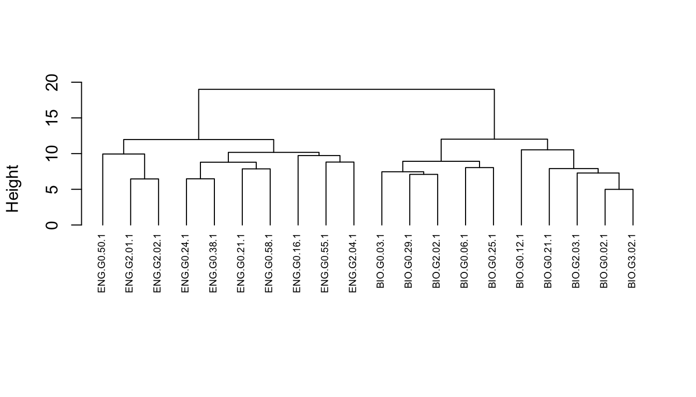
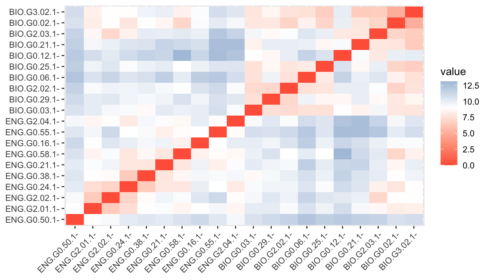
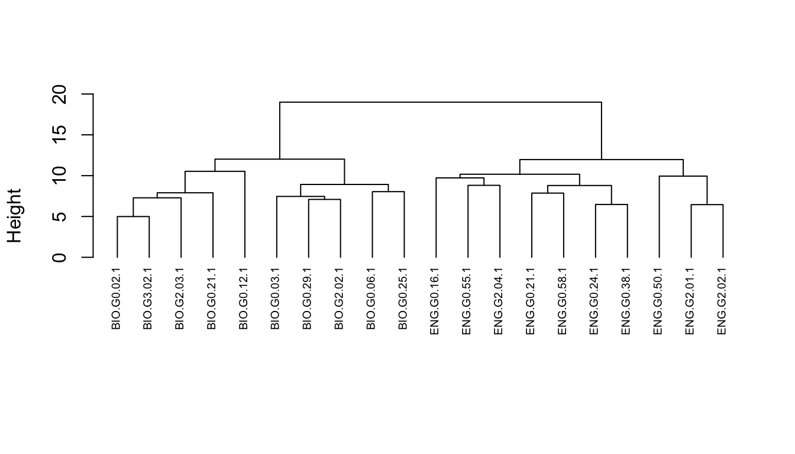
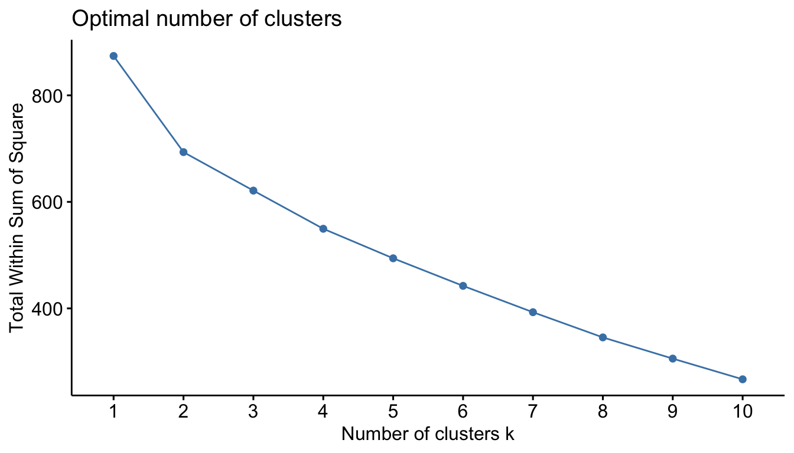
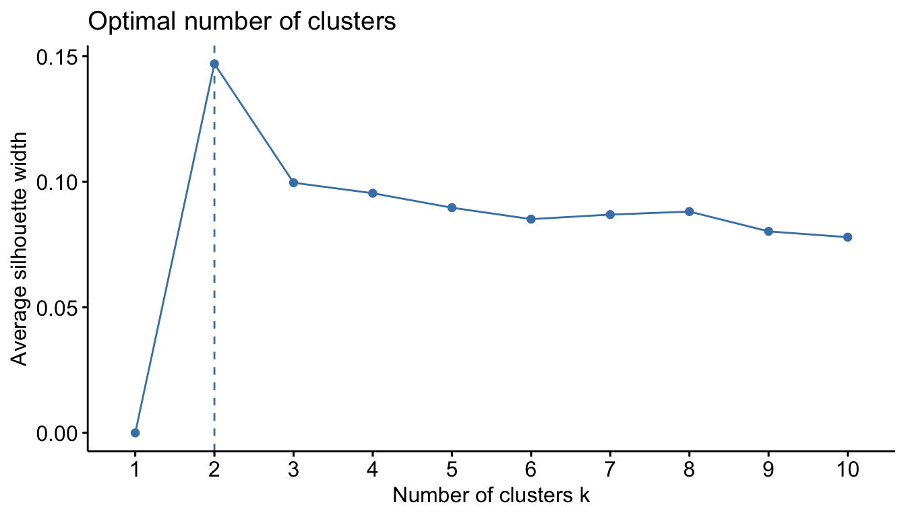
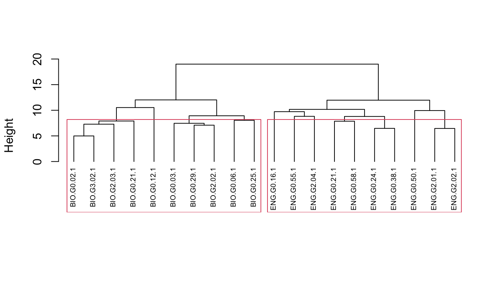
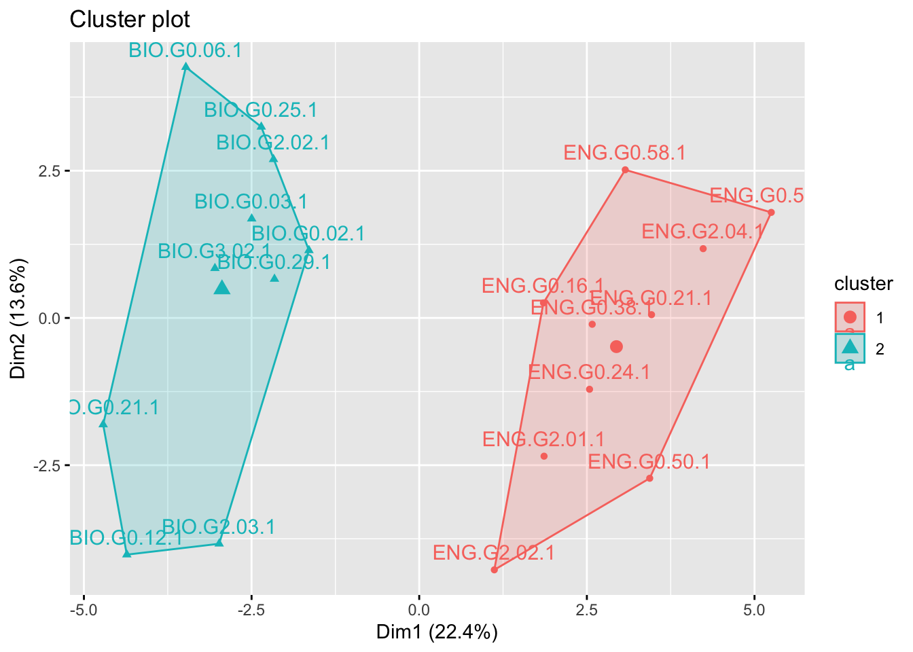
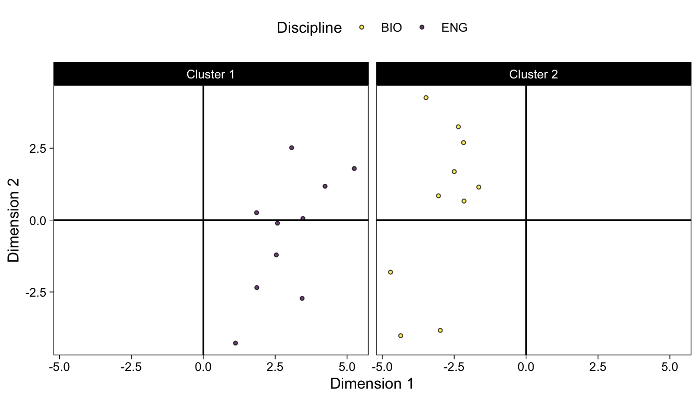
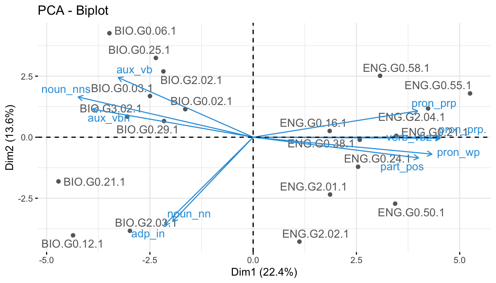

library(quanteda)
library(tidyverse)
library(udpipe)
library(cluster)
library(factoextra)
library(gt)10 Cluster Analysis
In this lab we’ll practice two types of cluster analysis
- Hierarchical agglomerative clustering
- K-means clustering
10.1 Hierarchical Agglomerative Clustering
We’ll start with hierarchical agglomerative clustering (pgs. 154, 159 & 236 in Brezina). Hierarchical cluster analysis is visualized with a dendrogram. If you are unfamiliar with these plots, there is a nice explanation here:
https://wheatoncollege.edu/wp-content/uploads/2012/08/How-to-Read-a-Dendrogram-Web-Ready.pdf
10.1.1 Prepare the data
Our clustering will be based on part-of-speech counts, so we need to parse some data using udpipe. First, we’ll get data from the micusp_mini corpus and subset out the Biology and English papers.
load("../data/micusp_mini.rda")sub_df <- micusp_mini %>%
filter(str_detect(doc_id, "BIO|ENG"))And parse the data using udpipe. This will take a couple of minutes.
ud_model <- udpipe_load_model("../models/english-ewt-ud-2.5-191206.udpipe")
annotation <- udpipe_annotate(ud_model, x = sub_df$text, doc_id = sub_df$doc_id, parser = "none")Now, we’re going to do something new. We’re going to combine our upos and xpos columns.
anno_edit <- annotation %>%
as_tibble() %>%
unite("upos", upos:xpos)Next we create a named list from the new, concatenated column.
sub_tokens <- split(anno_edit$upos, anno_edit$doc_id)This is what the data looks like:
sub_tokens$BIO.G0.02.1[1:10] [1] "PROPN_NNP" "PROPN_NNP" "ADV_RB" "VERB_VBD" "PUNCT_," "PUNCT_``"
[7] "ADJ_JJ" "NOUN_NN" "AUX_VBZ" "ADP_IN" Now, we’ll use that as our tokens object and filter out a few of the tokens to simplify our feature matrix.
sub_tokens <- as.tokens(sub_tokens)
sub_tokens <- tokens_remove(sub_tokens, "^punct_\\S+", valuetype = "regex")
sub_tokens <- tokens_remove(sub_tokens, "^sym_\\S+", valuetype = "regex")
sub_tokens <- tokens_remove(sub_tokens, "^x_\\S+", valuetype = "regex")From that, we’ll generate a dfm. We’ll weight the raw counts, and convert the result to a data frame.
sub_dfm <- sub_tokens %>%
dfm() %>%
dfm_weight(scheme = "prop") %>%
convert(to = "data.frame")Finally, we’re going to convert the first row (doc_id) into row names. And, for convenience, we’ll order our columns alphabetically.
sub_dfm <- sub_dfm %>% column_to_rownames("doc_id") %>%
dplyr::select(order(colnames(.)))As we did with factor analysis, we’ll scale our variables. Scaling the variables transforms them such that they have a mean of roughly zero, and a standard deviation of 1. See Brezina pg. 152-153. We can check the noun column, for example.
sub_dfm <- sub_dfm %>% scale() %>% data.frame()round(mean(sub_dfm$noun_nn), 5)[1] 0sd(sub_dfm$noun_nn)[1] 110.1.2 Create a distance matrix
We can use some base R functions to create our dendrogram from the following steps. First, we need to create a difference matrix based on distances. The two most common distance measures are euclidean and manhattan, which are described on pg. 153. Note, however, that there are other options, many of which are described here:
https://numerics.mathdotnet.com/Distance.html
A detailed defense of manhattan distance is located here:
http://rstudio-pubs-static.s3.amazonaws.com/476168_58516a3d6685427badf52a263e690975.html
And a comparative study of distance measure is published here:
https://arxiv.org/ftp/arxiv/papers/1411/1411.7474.pdf
We’ll start with euclidean distance.
d <- dist(sub_dfm, method = "euclidean")10.1.3 Clustering and linkage methods
The next step is to determine the linkage method. Brezina details these on pg. 154-159. Here they are in summary:
- Maximum or complete linkage clustering: It computes all pairwise dissimilarities between the elements in cluster 1 and the elements in cluster 2, and considers the largest value (i.e., maximum value) of these dissimilarities as the distance between the two clusters. It tends to produce more compact clusters.
- Minimum or single linkage clustering: It computes all pairwise dissimilarities between the elements in cluster 1 and the elements in cluster 2, and considers the smallest of these dissimilarities as a linkage criterion. It tends to produce long, “loose” clusters.
- Mean or average linkage clustering: It computes all pairwise dissimilarities between the elements in cluster 1 and the elements in cluster 2, and considers the average of these dissimilarities as the distance between the two clusters.
- Centroid linkage clustering: It computes the dissimilarity between the centroid for cluster 1 (a mean vector of length p variables) and the centroid for cluster 2.
- Ward’s minimum variance method: It minimizes the total within-cluster variance. At each step the pair of clusters with minimum between-cluster distance are merged.
We’ll carry out the hierarchical clustering using Ward.
hc <- hclust(d, method = "ward.D2")And plot the result.
plot(hc, cex = 0.6, hang = -1, main = "", sub = "", xlab = "")
Note that height is the value of the criterion associated with the clustering method for the particular agglomeration. In this case, Ward’s criterion is the total within-cluster error sum of squares, which increases as you go up the tree and make the clusters bigger.
We can follow these same steps using functions from the cluster package, too. These provide us with a few additional options, like get_dist(), which we’ll use to create a distance matrix.
d <- get_dist(sub_dfm)Now let’s visualize that matrix.
fviz_dist(d, gradient = list(low = "tomato", mid = "white", high = "steelblue"))
10.1.4 Clustering structure
We create our plot using the agnes() function, this time. Agglomerative Nesting is fully described in chapter 5 of Kaufman and Rousseeuw (1990), Finding Groups in Data: An Introduction to Cluster Analysis, which is available online through the CMU library:
https://cmu.primo.exlibrisgroup.com/permalink/01CMU_INST/6lpsnm/alma991019521734604436
Compared to other agglomerative clustering methods such as hclust, agnes has the following feature: it yields the agglomerative coefficient (see agnes.object) which measures the amount of clustering structure found.
hc <- agnes(d, method = "ward" )This can be plotted in a similar way.
plot(as.hclust(hc), cex = 0.6, hang = -1, main = "", sub = "", xlab = "")
But we can also retrieve an agglomerative coefficient, which measures the amount of clustering structure found (values closer to 1 suggest strong clustering structure).
hc$ac[1] 0.5992656Thus, we can see how the structure changes with different linkage methods, First, we can create a vector and a simple function.
m <- c( "average", "single", "complete", "ward")
names(m) <- c( "average", "single", "complete", "ward")
ac <- function(x) {
agnes(d, method = x)$ac
}Code
map_dbl(m, ac) |>
tibble::enframe() |>
gt() |>
cols_label(
name = md("**Method**"),
value = md("**Coeff**")
)Method |
Coeff |
|---|---|
| average | 0.2636975 |
| single | 0.2220678 |
| complete | 0.4304886 |
| ward | 0.5992656 |
10.1.5 Cutting a dendrogram
We can also “cut” our dendrogram in any number of clusters. The question is: How many clusters are optimal. Here, we can use some plotting functions that are part of the factoextra package. The first is the familiar “elbow” method.
fviz_nbclust(sub_dfm, FUN = hcut, method = "wss")
With our data, the result isn’t particularly helpful. We can then try the “silhouette” methods. The average silhouette approach measures the quality of a clustering. That is, it determines how well each object lies within its cluster.
A high average silhouette width indicates a good clustering. The average silhouette method computes the average silhouette of observations for different values of k. The optimal number of clusters k is the one that maximizes the average silhouette over a range of possible values for k.
fviz_nbclust(sub_dfm, FUN = hcut, method = "silhouette")
We can use the result to choose how we want to “cut” our dendrogram. Here we’ll cut it into two clusters.
plot(as.hclust(hc), cex = 0.6, hang = -1, main = "", sub = "", xlab = "")
rect.hclust(hc, k = 2)
10.2 K-means
Although it’s not covered in Brezina, another very common clustering method is called k-means. The basic idea behind k-means clustering consists of defining clusters so that the total intra-cluster variation (known as total within-cluster variation) is minimized.
The k-means algorithm can be summarized as follows:
By the analyst:
- Specify the number of clusters (k) to be created
By the algorithm:
- Select randomly k objects from the data set as the initial cluster centers or means
- Assign each observation to their closest centroid, based on the Euclidean distance between the object and the centroid
- For each of the k clusters update the cluster centroid by calculating the new mean values of all the data points in the cluster. The centroid of a kth cluster is a vector of length p containing the means of all variables for the observations in the kth cluster; p is the number of variables.
- Iteratively minimize the total within sum-of-squares. That is, iterate steps 3 and 4 until the cluster assignments stop changing or the maximum number of iterations is reached. By default, the R software uses 10 as the default value for the maximum number of iterations.
We’ve already determined that our data is best divided into 2 clusters. So we specify “centers” to be 2.
km <- kmeans(sub_dfm, centers = 2, nstart = 25)Note that we can access important information about our clusters. For example, we can return the within sum-of-squares:
km$withinss[1] 370.3961 323.0377Or the between sum-of-squares:
km$betweenss[1] 180.5661Plotting the result is easy with fviz_cluster().
fviz_cluster(km, data = sub_dfm)
But there a variety of ways to make effective plots. Let’s make one that gives us more control over the details.
10.2.1 Plotting and dimension reduction
Dimension reduction for plotting k-means is typically done using PCA. So lets start there.
km_pca <- prcomp(sub_dfm)We can check the percent of variance explained by looking at the eigen values.
Code
round(get_eigenvalue(km_pca), 1) |>
head(10) |>
gt()| eigenvalue | variance.percent | cumulative.variance.percent |
|---|---|---|
| 10.3 | 22.4 | 22.4 |
| 6.3 | 13.6 | 36.0 |
| 4.7 | 10.2 | 46.1 |
| 4.2 | 9.1 | 55.2 |
| 3.5 | 7.6 | 62.8 |
| 2.8 | 6.2 | 68.9 |
| 2.4 | 5.2 | 74.1 |
| 2.0 | 4.4 | 78.5 |
| 1.6 | 3.4 | 81.9 |
| 1.6 | 3.4 | 85.3 |
We can also extract the coordinates for the 2 principal components and create a data frame. We’ll also add columns for discipline and cluster membership.
coord_df <- data.frame(km_pca$x[,1:2]) %>%
mutate(Discipline = str_extract(rownames(sub_dfm), "^[A-Z]+")) %>%
mutate(Cluster = as.factor(paste0("Cluster ", km$cluster)))ggplot(coord_df) +
geom_vline(xintercept = 0) +
geom_hline(yintercept = 0) +
geom_point(aes(x = PC1, y = PC2, fill = Discipline), size = 1, shape = 21, alpha = .75) +
viridis::scale_fill_viridis(discrete = T, direction = -1) +
xlab(paste0("Dimension 1")) +
ylab("Dimension 2") +
theme_linedraw() +
theme(panel.grid.major.x = element_blank()) +
theme(panel.grid.minor.x = element_blank()) +
theme(panel.grid.major.y = element_blank()) +
theme(panel.grid.minor.y = element_blank()) +
theme(legend.position="top") +
facet_grid(~Cluster)
10.2.2 Variable contributions
Variable contributions to each PC and their relationship to individual observations and clusters can be visualized using a biplot.
fviz_pca_biplot(km_pca, repel = TRUE,
select.var = list(contrib=10),
col.var = "#2E9FDF", # Variables color
col.ind = "#696969" # Individuals color
)
To extract the precise percentage each variable contributes to a PC we can use fviz_contrib(), but let’s briefly look at how those contributions are calculated.
First, we can use get_pca_var() from the factoextra package to extract the loadings.
km_pca_var <- get_pca_var(km_pca)Loadings are the coordinates of the features/variables on the principal components. Loadings are unstandardized eigenvectors’ elements.
Contributions are the square of the loading matrix (the cos2 output from get_pca_var() function) divided by the column sums of the cos2 matrix, which are the variances of PCs.
There is a nice explanation here:
https://littlebitofdata.com/en/2017/12/pca/
To verify this, we can check to see if the relevant vectors are equal:
all.equal(km_pca_var$cos2[,1] * 100 / sum(km_pca_var$cos2[,1]), km_pca_var$contrib[,1])[1] TRUEHere they are in tablular form:
Code
# PC1 % Contribution
km_pca_var$contrib[,1] |>
sort(decreasing = T) |>
tibble::enframe() |>
gt()| name | value |
|---|---|
| pron_prp. | 7.8706438229 |
| verb_vbz | 7.8654608079 |
| pron_wp | 7.1835320873 |
| noun_nns | 6.8934596760 |
| part_pos | 6.1554504170 |
| pron_prp | 6.0864832934 |
| aux_vbn | 5.7925986271 |
| aux_vb | 4.0960766283 |
| num_cd | 3.8757888030 |
| pron_nn | 3.4708980200 |
| sconj_in | 3.4555264918 |
| pron_ex | 3.3612599603 |
| verb_vbn | 2.9344382766 |
| aux_vbz | 2.7829282302 |
| adj_jjr | 2.5653410022 |
| aux_vbd | 2.4692363155 |
| det_pdt | 2.3551755683 |
| part_to | 2.2685753217 |
| adv_rbr | 2.1291027186 |
| adp_in | 1.7670925206 |
| aux_md | 1.7255226533 |
| adj_jj | 1.6057856824 |
| pron_wp. | 1.4832639796 |
| noun_nn | 1.4555340031 |
| propn_nnp | 1.4342964611 |
| adv_rb | 1.3924723259 |
| aux_vbp | 1.1821743393 |
| adv_wrb | 0.8379468930 |
| adj_nn | 0.6343316872 |
| noun_vbg | 0.6189356316 |
| verb_vb | 0.4233746477 |
| pron_wdt | 0.3029131527 |
| cconj_cc | 0.2387999315 |
| part_rb | 0.2265508617 |
| propn_nnps | 0.2179496691 |
| adp_rp | 0.1847443396 |
| verb_vbp | 0.1671091533 |
| intj_uh | 0.1281066668 |
| adj_jjs | 0.1152184061 |
| aux_vbg | 0.0838218686 |
| verb_vbd | 0.0559400984 |
| verb_vbg | 0.0523675707 |
| pron_dt | 0.0315891361 |
| adv_rbs | 0.0175221007 |
| det_dt | 0.0043273031 |
| det_wdt | 0.0003328488 |